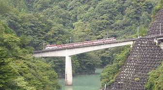
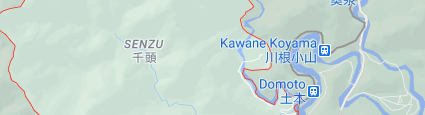

Destination
City Senzu
 Shizuoka-shi, [ɕizɯꜜoka]) is the capital city of Shizuoka Prefecture, Japan, and the prefecture's second-largest city in both population and area. It has been populated since prehistoric times. As of 1 December 2019, the city had an estimated population of 690,881 in 106,087 households,and a population density of 490 inhabitants per square kilometre (1,300/sq mi). The city's name is made up of two kanji, 静 shizu, meaning "still" or "calm"; and 岡 oka, meaning "hill(s)".
